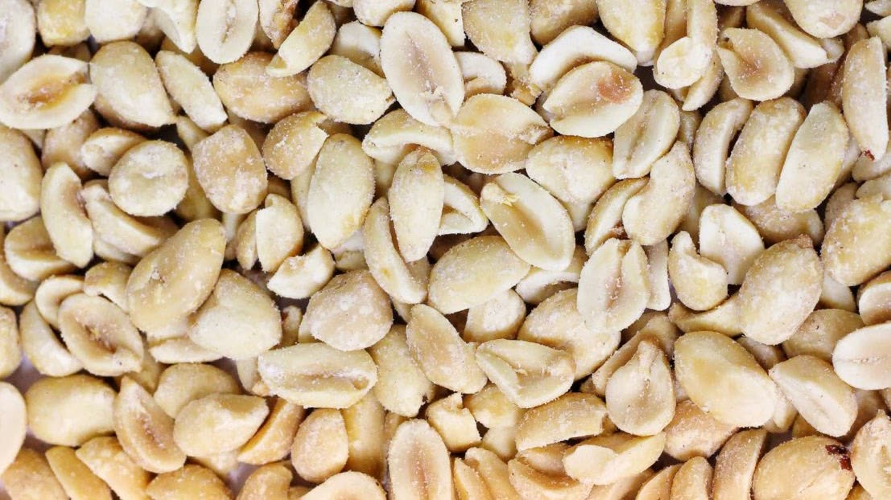
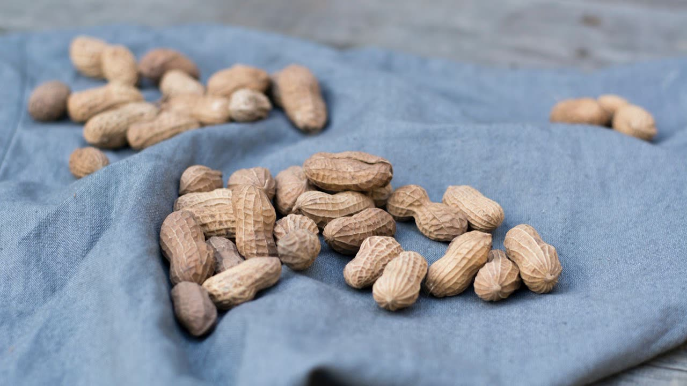
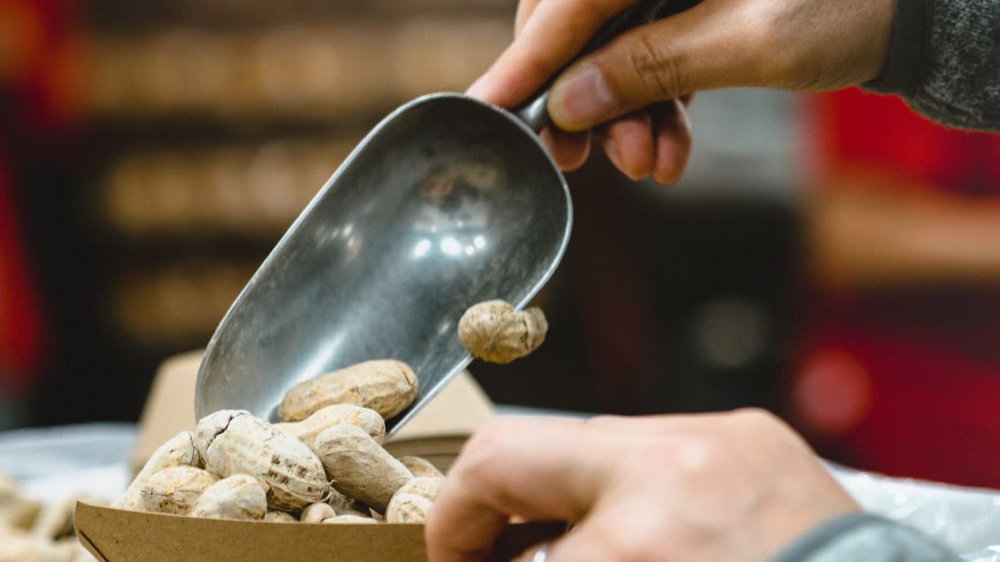
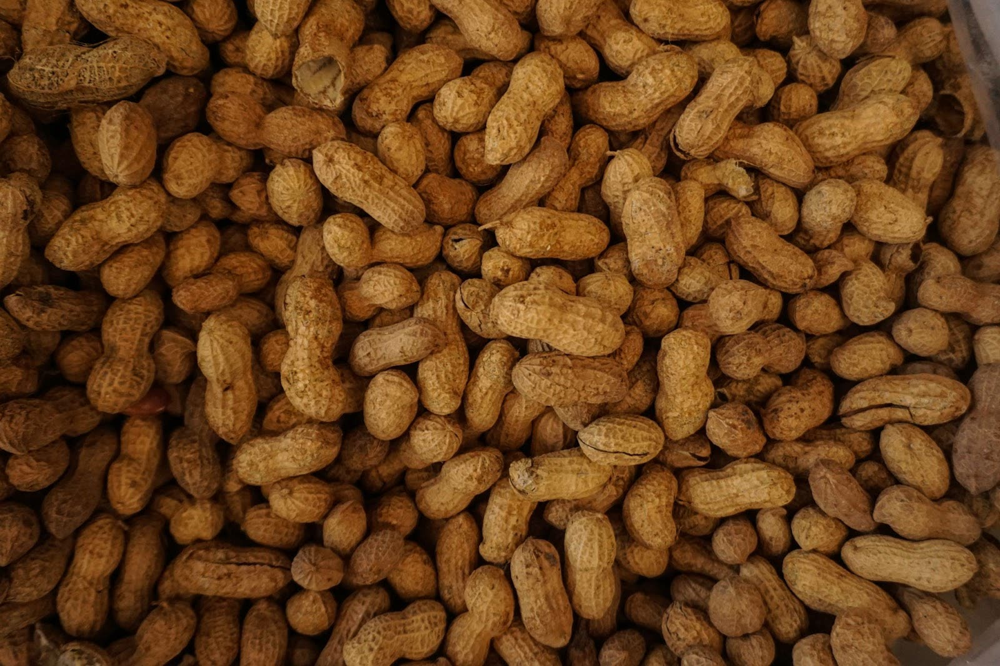
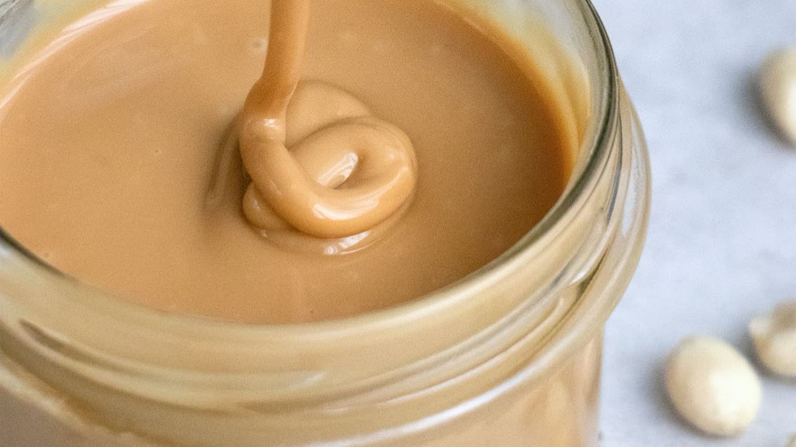
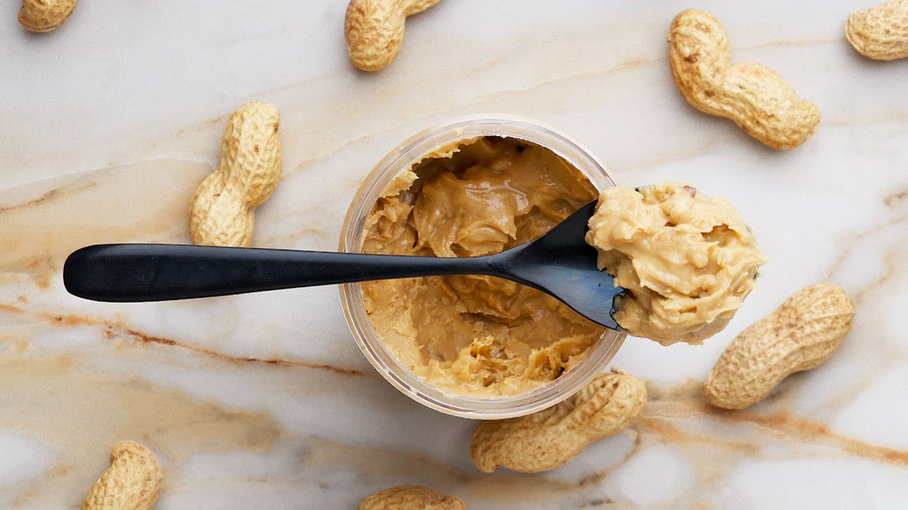

We sat down with Crop of Now leadership for a candid, wide-ranging interview. Leadership was very on-message.
Peanuts.


Peanuts.
Peanuts.


Peanuts.
Almond Butter.


Peanuts.
Effective immediately, Crop of Now will continue to believe what it has always believed. Our values remain:
Thank you for your continued commitment to the legume.